A little about me...
I'm Beatriz Duarte, a Junior Web Developer in progress.
I like brazilian music, craft, arts and INTERNET!
When the pandemic started in the UK I've been put on fourlough and at the beggining
I was having fun (because I needed a break from my hated job) but after some time... I was just bored.
I wished to go out, to don't wait forever in a queue to get my grocery shopping done and when the summer
started to show up... OMG, I just wanted to run away to Copacabana Beach and have my coconut water in peace by the sea.
With the lockdown going on, show lives, zoom calls and deliveries turned essencial for our day to day tasks and entertainment.
I realised that there is nothing in more progress than internet and its solutions so I started to study Digital Marketing and at the meantime,
I discovered what software developers do. I loved it, so I started a course at Code Nation.
In life I count on resilience, that was how I learnt Spanish and English.
I moved city and country several times and I had to adapt to new languages, accents, culture.
I can say that it made me more flexible and I learned how to adapt to the environment that is proposed to me.
This page is my first job in the 3-week course at Code Nation .
I like to mix colors, creativity and minimalism.
At Code Nation I learned Python, HTML5 and CSS3.
For now my focus is to get into an apprenticeship programme to develop my skills and build a successfull career in Coding.
